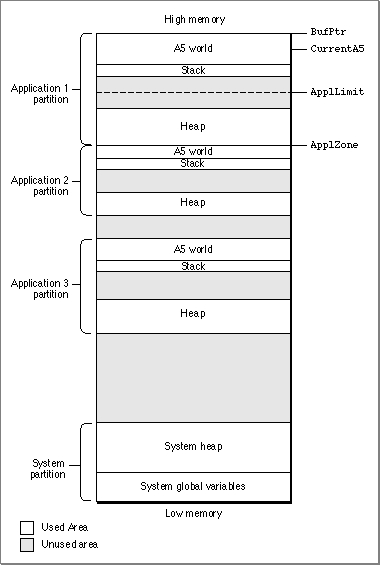

About Memory
In the cooperative multitasking environment provided by the Macintosh Operating System, your application can use only part of the total amount of RAM available on a computer. Some of the available RAM is reserved for use by the Operating System itself, and the remainder of the available memory is shared among all open applications.When the Operating System starts up, it divides the available RAM into two broad sections. It reserves for itself a zone or partition of memory known as the system partition. The system partition always begins at the lowest addressable byte of memory (memory address 0) and extends upward. The system partition consists of two main parts:
In general, the memory in the system partition is for use by the Operating System alone. Your application probably won't need to read or write that memory.
- a system heap
- a set of global variables
All memory outside the system partition is available for allocation to applications or other software components. In the cooperative multitasking environment, the user can have multiple applications open at once. When an application is launched, the Operating System assigns it a section of memory known as its application partition. In general, an application uses only the memory contained in its own application partition.
Figure 2-1 illustrates the organization of memory when several applications are open at the same time. The system partition occupies the lowest position in memory. Application partitions occupy some or all of the remaining space. Note that application partitions are loaded into the top part of memory first. An application partition consists of three main parts:
Figure 2-1 Memory organization in the cooperative multitasking environment
- an application heap
- a stack
- an A5 world, which includes the application's global variables

The System Heap
The main part of the system partition is an area of memory known as the system heap. In general, the system heap is reserved for exclusive use by the Operating System and other system software components, which load into it various items such as system resources, system code segments, and system data structures. All system buffers and queues, for example, are allocated in the system heap.The system heap is also used for code and other resources that do not belong to specific applications, such as code resources that add features to the Operating System or that provide control of special-purpose peripheral equipment. System patches and system extensions (stored as code resources of type
'INIT') are loaded into the system heap during the system startup process. Hardware device drivers (stored as code resources of type'DRVR') are loaded into the system heap when the driver is opened.The System Global Variables
The lowest part of memory is occupied by a collection of global variables called system global variables (or low-memory system global variables). The Operating System uses these variables to maintain different kinds of information about the operating environment. For example, theTicksglobal variable contains the number of ticks (sixtieths of a second) that have elapsed since the system was most recently started up. Similar variables contain, for example, the height of the menu bar (MBarHeight) and pointers to the heads of various operating-system queues (DTQueue,FSQHdr,VBLQueue, and so forth). Most low-memory global variables are of this variety: they contain information that is generally useful only to the Operating System or other system software components.Other low-memory global variables contain information about the current application. For example, the
ApplZoneglobal variable contains the address of the first byte of the active application's partition. TheApplLimitglobal variable contains the address of the last byte the active application's heap can expand to include. TheCurrentA5global variable contains the address of the boundary between the active application's global variables and its application parameters. Because these global variables contain information about the active application, the Operating System changes the values of these variables whenever a context switch occurs (that is, whenever an application takes control of the CPU from another application).In general, it is best to avoid reading or writing low-memory system global variables. Most of these variables are undocumented, and the results of changing their values can be unpredictable. Usually, when the value of a low-memory global variable is likely to be useful to applications, the system software provides a routine that you can use to read or write that value. For example, you can get the current value of the
Ticksglobal variable by calling theTickCountfunction.